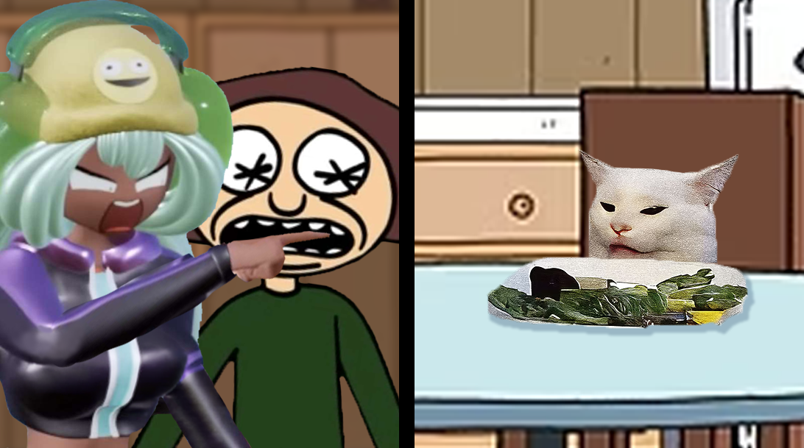

Tabby-Tammy
Tammy Tran's Portfolio

While looking for memes to utilize for this mashup, I remembered the Dolly Dimpley and
The Cool Autistic Gamer 774. I remembered the crash out that Dolly had in one of the
YouTube video episodes featuring her and wanted to recreate that one meme with the 2
women yelling at the cat at the dinner table with them. it did take a bit of extra editing
due to the positioning of Dolly's arm, but I'm really happy with how this turned out in the end!